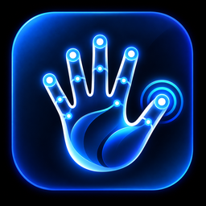

Vision AIMove the cursor, click, scroll and zoom in the air. No special hardware, just the webcam you already have.
Download for Windows See the gesturesThe cursor is filtered and moved many times per second, so it glides instead of jumping.
The camera picture is processed on your PC. Nothing is recorded or uploaded.
Starts with Windows if you want. Pause with a fist or Ctrl+Alt+P. Quit any time.
| Gesture | How | Plan |
|---|---|---|
| Move | Open hand, move it | Free |
| Tap / double tap | Touch thumb and index fingertip | Free |
| Scroll | Peace sign, move hand up or down | Free |
| Pause / resume | Hold a fist for 1.5 seconds | Free |
| Right click | Thumb and middle fingertip | Pro |
| Drag and drop | Pinch, hold and move | Pro |
| Zoom | One hand: thumb on index and middle. Two hands: pinch and spread | Pro |
| Task View | Thumb and ring fingertip, hold half a second | Pro |
Needs a webcam. Download link and price will be here when the first release is ready.